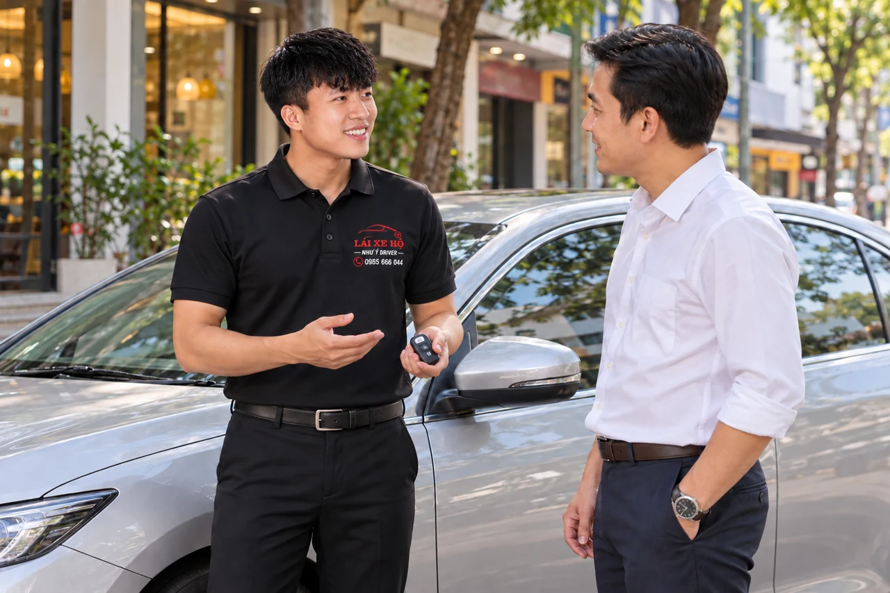

NHƯ Ý DRIVER · KHU VỰC PHỤC VỤ
Lái xe hộ Thanh Khê tại Đà Nẵng
Cần đưa xe về từ Thanh Khê hoặc có người lái chờ qua các cuộc hẹn? Gửi Như Ý Driver nơi nhận xe, các điểm ghé và giờ kết thúc dự kiến. Điều phối kiểm tra lịch và tư vấn theo chuyến hoặc theo thời lượng phù hợp.

Một lượt về hay nhiều cuộc hẹn trong buổi?
Nếu chỉ cần đưa xe từ điểm hẹn về nhà, bạn có thể hỏi một chuyến với hai địa chỉ rõ ràng. Nếu đi ngân hàng, văn phòng rồi gặp khách và cần tài xế chờ, hãy gửi cả thời gian sử dụng thay vì chỉ nhắn tổng quãng đường.
Phân biệt từ đầu giúp bạn so sánh giá đúng phạm vi. Bài so sánh thuê theo giờ và theo ngày có ví dụ cho lịch ngắn và lịch kéo dài.
Làm rõ tên địa chỉ trước khi gặp tài xế
Với địa chỉ quen dùng các tên Xuân Hà, Chính Gián, Thạc Gián hoặc Thanh Khê Đông/Tây, nên gửi đủ tên đường, số nhà và ghim vị trí. Đừng chỉ đưa một tên địa bàn cũ rồi để hai bên tự đoán nơi nhận xe.
Các tên này có thay đổi trong thông tin sắp xếp địa danh. Mục đích của việc gửi địa chỉ đầy đủ là xác định điểm gặp, không phải yêu cầu khách tự tra lại mọi tên gọi trước khi liên hệ.
Nhận xe tại chỗ làm: xác định ai có chìa khóa
Nếu bạn kết thúc công việc muộn, hãy báo xe ở bãi của nơi làm hay bãi bên ngoài và ai giữ vé, chìa khóa. Nếu cần đợi bạn xử lý xong việc, đưa khoảng chờ dự kiến vào yêu cầu báo giá.
Khi cuộc hẹn kéo dài, nhắn lại sớm giờ đi mới. Không nên mặc định lịch tài xế và chi phí luôn giữ nguyên khi thêm giờ hoặc điểm ghé.
Mẫu lịch ngắn để hỏi đúng loại báo giá
| Lịch bạn gửi | Cách trao đổi |
|---|---|
| Từ điểm hẹn về một địa chỉ | Nêu giờ đi, loại xe và hai địa chỉ để hỏi một chuyến. |
| Ghép nhiều cuộc hẹn | Liệt kê thứ tự điểm ghé, thời gian chờ và giờ xong để hỏi theo thời lượng. |
| Chưa biết lúc tan việc | Nêu khoảng giờ, người giữ chìa khóa và cách báo lại giờ chính thức. |
Một mức giá theo km chưa phản ánh thời gian chờ tại các cuộc hẹn. Nếu lịch chưa rõ, gửi kế hoạch đang có để hỏi tài xế theo giờ và thống nhất cách cập nhật khi kéo dài.
Câu hỏi thường gặp
Tôi chưa biết chính xác giờ xong việc thì đặt thế nào?
Gửi khoảng giờ dự kiến và hỏi cách báo lại giờ chính thức; khả năng bố trí được kiểm tra theo lịch mới.
Muốn tài xế chờ ở nhiều cuộc hẹn cần ghi gì?
Liệt kê thứ tự địa chỉ, khoảng chờ mỗi điểm và giờ kết thúc mong muốn.
Tên đường trùng hoặc tôi chỉ có ghim thì sao?
Gửi ghim cùng một mốc gần xe, tên bãi hoặc cổng vào. Trao đổi lại địa chỉ để tránh nhận nhầm vị trí.
Thông tin liên quan
Trao đổi chuyến đi với Như Ý Driver
Gửi điểm đón, điểm đến, loại xe và giờ đi để kiểm tra lịch. Chuyến được xác nhận sau khi hai bên thống nhất khả năng phục vụ, thời gian và chi phí.